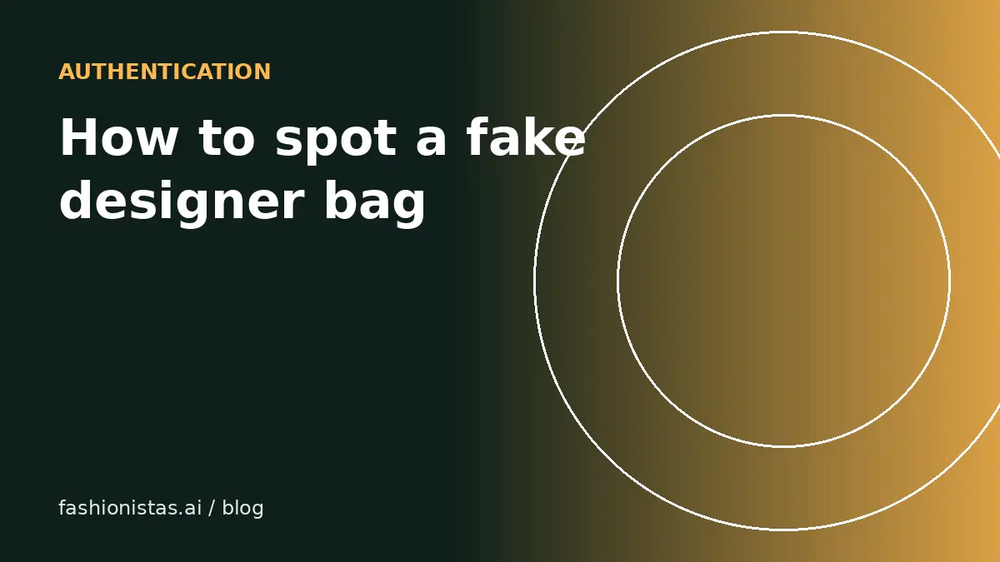

How to spot a fake designer bag before you buy secondhand

Counterfeit handbags have become very good, and no single check is foolproof. But most fakes still fail on several basics at once: stitching, hardware, materials, stamps and the seller's story. This guide covers the general checks that work across brands, then brand-specific details for Louis Vuitton, Chanel, Gucci and Prada, and when it is worth paying a professional.
First, protect yourself as a buyer
Before looking at stitching, look at how you are buying. The safest route is not becoming an expert overnight; it is buying in a way where a fake gets caught or refunded.
- Use platform authentication when available. Poshmark authenticates eligible items sold for $500 or more. eBay's Authenticity Guarantee covers qualifying handbags, sending them to an authenticator before they reach you. The RealReal, Vestiaire Collective and Fashionphile run their own authentication.
- Pay through the app. Never pay by bank transfer, Zelle, gift cards or "friends and family" payments. Those remove your buyer protection.
- Ask for specific photos: interior label, heat stamp, date code or serial sticker, hardware engravings, stitching on the handles and corners, and the zipper pull.
- Be wary of prices far below market. Check recent sold prices for the exact model. A deal that is 70% below market is almost never a deal.
No online guide can authenticate a bag with certainty. Use these checks to screen out obvious fakes and decide when to pay for professional authentication.
General checks that work for most brands
Counterfeiters cut corners in the same places across brands.
- Stitching. Genuine luxury bags have even, straight, consistently spaced stitches, often with a slight angle on handles. Look for wobbly lines, doubled-back stitches, loose threads or uneven counts on matching parts.
- Hardware. Real hardware is heavy, smoothly finished and crisply engraved. Fakes often feel light, show flaking plating, or have shallow, blurry engraving.
- Materials. Leather should smell like leather, not chemicals or plastic. Coated canvas should be consistent and not overly shiny.
- Symmetry and pattern placement. Many brands align patterns across seams and keep logos centered. Crooked or cut-off logos are a warning.
- Fonts and stamps. Heat stamps and labels should be crisp, evenly spaced and consistent with the brand's typography for that era.
- Interior and lining. Fakes often skimp on the parts you see less: cheap lining, rough edges, missing interior stamps.
- Packaging is not proof. Dust bags, boxes, receipts and cards are faked too. Treat them as a bonus, not evidence.
Louis Vuitton
- Date codes, not serial numbers. Most LV bags made from the 1980s until about 2021 have a date code: letters for the factory location and numbers for the date. They are not unique serials, so a matching code proves little, but a code in an impossible format is a red flag. Since around 2021, LV has used embedded microchips instead of date codes in many items.
- Monogram alignment. On many classic monogram canvas bags, the LV pattern runs continuously and is often upside down on one side of pieces made from a single length of canvas, such as the Speedy. That is normal. Patterns cut off sloppily at seams are not.
- Vachetta leather. Natural untreated leather trim darkens to honey with age. Very pale trim on a "vintage" bag, or trim that looks plastic, deserves a closer look.
- Heat stamp. "Louis Vuitton Paris made in France" (or the right country) in a clean font, with round, very short-tailed Os.
Chanel
- Serial sticker or microchip. Chanel bags have long carried a serial sticker inside, with a matching authenticity card in older items. Since 2021, Chanel has moved to a microchip. A sticker with the wrong number of digits for the claimed era is suspicious.
- Quilting. On a classic flap bag, the diamond quilting lines up across the flap and the body, and across the back pocket.
- CC turn-lock. The interlocking Cs: on most authentic versions, the right C overlaps on top at the top and the left C on top at the bottom. Screws on the back plate on many models are flathead.
- Stitch count. Chanel uses a high stitch count per quilting edge, so stitches look small and dense. Large, sparse stitches are a common flaw on fakes.
Gucci and Prada
Gucci
- Interior tag. A leather tag reading "Gucci" with "made in Italy" beneath, and on the back a serial number usually formatted in two rows of digits. The font should be clean and the tag well finished.
- GG canvas. The pattern should be symmetrical and consistent, without misshapen Gs or blurred ink.
- Hardware. Branded zippers and engraved hardware should feel substantial with crisp engraving.
Prada
- Triangle logo plaque. The enamel or metal triangle should have precise edges and the lettering a specific shape; the R in Prada on authentic logos traditionally has a small notch in the right leg. Uneven lettering, crooked plaques or loose rivets are common giveaways.
- Lining. Many nylon and leather bags have a jacquard lining with the Prada logo woven in, not printed.
- Authenticity card. Prada historically included a card, but cards are easy to fake, so do not rely on them.
Seller red flags
- Stock photos or photos borrowed from other listings. Reverse image search the main photo.
- Refusing to send close-ups of stamps, codes or hardware.
- Vague descriptions like "designer inspired" or "no brand stated" alongside a famous logo.
- Many identical "new" designer bags in one closet at low prices.
- Pushing you to pay outside the app, or claiming the app's protection "doesn't apply".
- Stories that change: a gift, then an inheritance, then a boutique purchase.
When to pay for authentication
If you are spending more than you'd be comfortable losing, pay for authentication. Online services such as Real Authentication, Entrupy-based shops, or a brand-specialist consignment store can review photos or the item for a fee that is small compared with the bag's price.
If you are selling, authentication also helps you price higher, because buyers pay for certainty. Our pricing guide explains how authenticated items compare. And if you want to see how a bag looks on you before committing, you can paste the listing link into fashionistas.ai Try it on with your own photo. For sneakers, see our separate guide to spotting fake sneakers.
FAQ
What is the easiest way to tell if a designer bag is fake?
There is no single test. The most reliable approach is to buy through a platform that authenticates, such as eBay's Authenticity Guarantee or Poshmark's authentication for $500+ items, and to check stitching, hardware and stamps against known authentic examples.
Does a Louis Vuitton date code prove a bag is real?
No. Date codes are easy to copy and are not unique serial numbers. A wrong format is a red flag, but a correct-looking code doesn't prove authenticity. Many newer LV items use microchips instead.
Are dust bags and receipts proof of authenticity?
No. Counterfeiters fake packaging, cards and receipts. Treat them as a nice extra, never as proof.
Can I get my money back if I buy a fake on Poshmark or eBay?
Generally yes, if you report it through the app within its claim window and paid inside the app. Paying outside the platform usually removes that protection.
How much does bag authentication cost?
Online photo-based services commonly charge from around $10 to $50 per item, and in-person or device-based checks can cost more. Prices vary by service and brand.